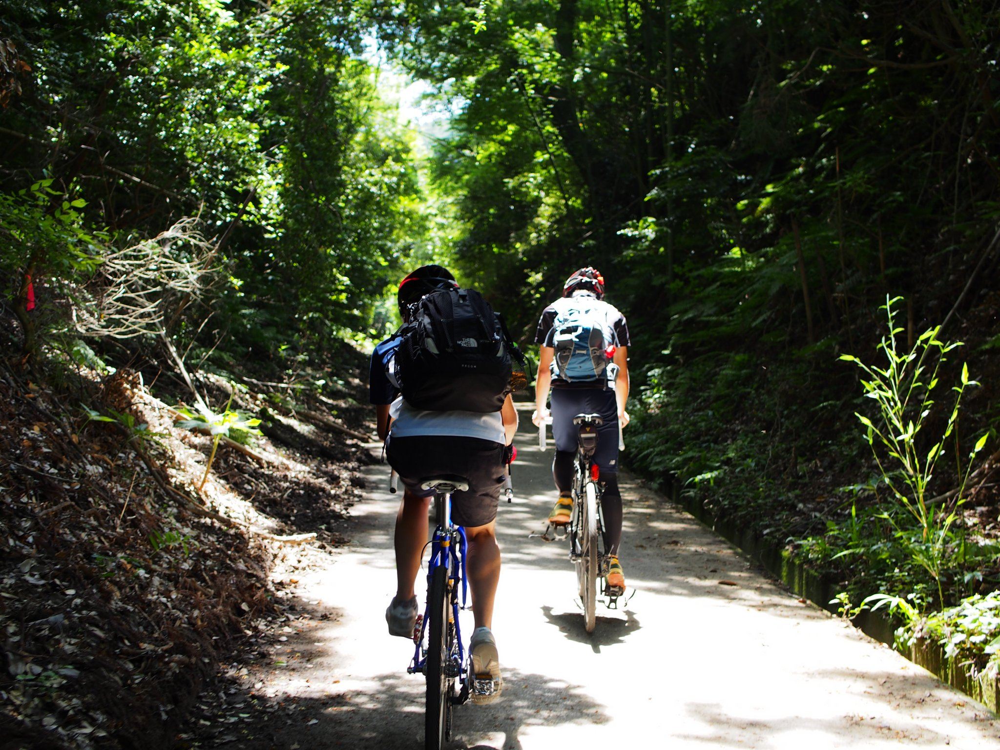
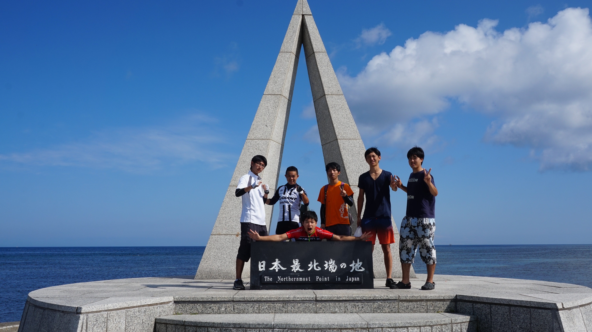
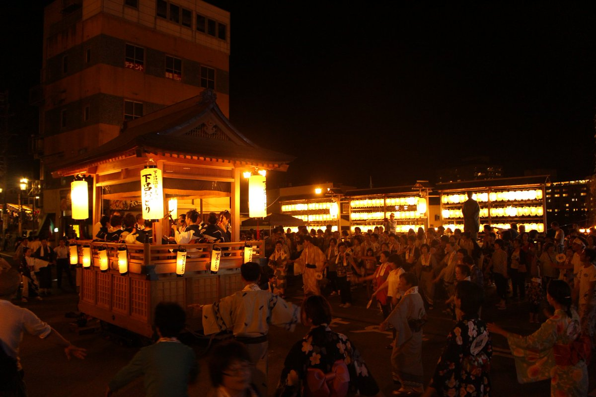

What is TUBT?
～自転車部旅行班とは～
Tokyo
Univercity
Bicycle Club
Touring Part
皆さんはじめまして、東京大学自転車部旅行班、主将の原口です。
ここでは、自転車部旅行班とは何ぞや？ということを説明しようと思います。
僕たちのメインの活動は旅行をすることです。それも自転車で。当然ですね、部活の名そのままです。

緑生い茂る林道を

潮風薫る海岸線を

雰囲気漂う観光名所を
自転車で旅します
いい感じでしょう？
大学の一年から三年の間に、夏合宿で北海道・東北地方・信州に、春合宿で九州地方・中国地方・四国地方に行くので、都合３年間で日本中を旅することができます。
他にも秋合宿で訪れたい場所に足を運んだり、自転車を持って海外に飛び出すこともできるでしょう。
Schedule
～活動日程～
4月
5月
...
Activities
～活動紹介～
月例
月に数回、日帰りや1泊2日で関東近辺に自転車で走りに行きます。
秩父や奥多摩、房総半島や御殿場など場所は様々。合宿に向け鍛えていきましょう。
土曜練
自転車に乗らない週は駒場キャンパス周辺でトレーニングを行います。
バレーコートなくなっちゃったよぉ(´;ω;｀)
ＮＳＲ
Non Stop Run、略してNSRとは、五月祭・駒場祭に合わせて行われる旅行班の一大イベントのひとつ。長距離を24時間以上かけてひたすら走り続けます！
到着セレモニーでは、応援部の協力のもと盛大に出迎えてくれるので、走破した時の達成感はこの上ないものです。
合宿
年間を通してメインとなる行事は合宿です。夏合宿で北海道・信州・東北を、春合宿で九州・中国・四国を巡り、3年かけて日本一周します(近畿地方は一年生のみで行われるプレ合宿で行くことができます)。2018年度入部者の合宿予定表は以下の通りです。
| 夏合宿 | 秋合宿 | 春プレ | 春合宿 | |
| 1年 | 東北 | 国内or海外 | 近畿 | 四国 |
| 2年 | 北海道 | 国内or海外 | 九州 | |
| 3年 | 信州 | 中国 |
- 部員は6人前後の班に分かれ、主に2年生のプランナーが建てた計画に沿って走ります。最終日には全ての班はあらかじめ決められた場所に集結し、旅の思い出を語り合います。
- 一回の合宿は10~11日間です。秋合宿は、有志で海外に出かけることもできます。
- 合宿中の宿泊はキャンプ主体で、班により頻度は様々ですがユースホステルやコテージも利用します(海外では全宿泊が基本)。
- プランのキツさはそれぞれのプランナーの好みによりまちまちなので、自分の体力に応じたレベルのプランを選んで合宿に参加することができます。
Members
～部員紹介～
| 4年 | 個人情報 | 個人情報 | 個人情報 | 個人情報 | 個人情報 | 個人情報 | 個人情報 | 個人情報 |
|---|---|---|---|---|---|---|---|---|
| 個人情報 | 個人情報 | 個人情報 | 個人情報 | 個人情報 | 個人情報 | 個人情報 | ||
| 3年 | 個人情報 | 個人情報 | 個人情報 | 個人情報 | 個人情報 | 個人情報 | 個人情報 | 個人情報 |
| 個人情報 | 個人情報 | 個人情報 | ||||||
| 2年 | 個人情報 | 個人情報 | 個人情報 | 個人情報 | 個人情報 | 個人情報 | 個人情報 | 個人情報 |
| 個人情報 | 個人情報 | 個人情報 | 個人情報 | 個人情報 | ||||
| 1年 | ||||||||
Docments
～資料～
最新版の資料を掲示したい…